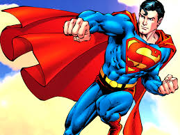

Hello world
A few facts about our super hero
Clark Joseph Kent is a fictional character appearing in American comic books published by DC Comics. Created by Jerry Siegel and Joe Shuster, he debuted in Action Comics #1 and serves as the civilian and secret identity of the superhero Superman.
About the earth

- discovery in 1898
- it was impossible to make compounds of krypton
- It is a white, crystalline solid, stable at temperatures below -30 degreeC.
Top 3 facts about the our Hero
- Amy Adams auditioned for the role of Lois Lane, which went to Kate Bosworth.
- He was from krypton
- He was not human.